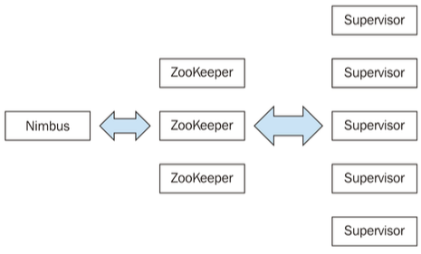
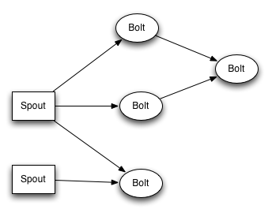
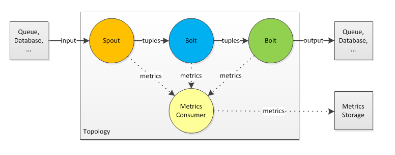
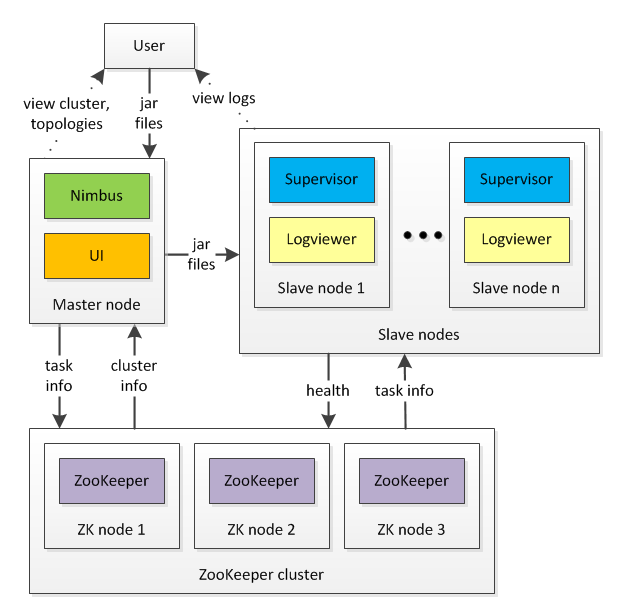
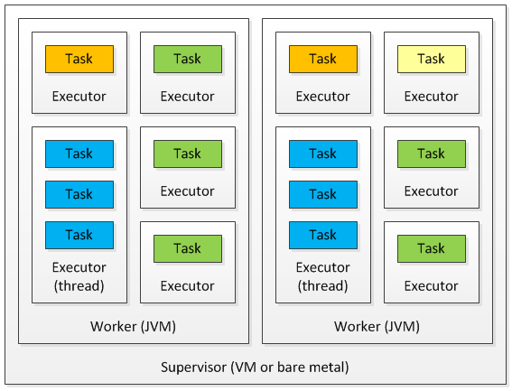
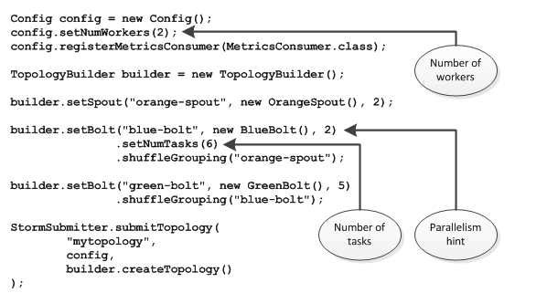

Introduction
What's Apache Storm?
Apache Storm is a free and open source distributed realtime computation system. It makes it easy to reliably process unbounded streams of data, doing for realtime processing what Hadoop did for batch processing.
Storm is to real-time processing what Hadoop is to batch processing.
Use cases
- Stream processing
- Continuous computation (i.e.: aggregations)
- Distributed RPC (DRPC) The idea behind distributed RPC (DRPC) is to parallelize the computation of really intense functions on the fly using Storm
- Real-time analytics
Features
- Fast
- Horizontally scalable
- Fault tolerant
- Guaranteed data processing
- Easy to operate
- Programming language agnostic
Storm components
Zookeeper
A Storm cluster follows a master-slave model where the master and slave processes are coordinated through ZooKeeper. The following are the components of a Storm cluster. All of the states associated with the cluster and the various tasks submitted to Storm are stored in ZooKeeper. Nimbus and supervisor nodes do not communicate directly with each other, but through ZooKeeper. As all data is stored in ZooKeeper, both Nimbus and the supervisor daemons can be killed abruptly without adversely affecting the cluster.
Nimbus
The Nimbus node is the single stateless master in a Storm cluster (it stores all of its data in ZK). It is responsible for distributing the application code across various worker nodes, assigning tasks to different machines, monitoring tasks for any failures, and restarting them as and when required. If the active node goes down, then the passive node will become an Active node.
The Storm workers can work smoothly even if all the Nimbus nodes go down but the user can't submit any new jobs into the cluster or the cluster will not be able to reassign the failed workers to another node.
Supervisor nodes
Supervisor nodes are the worker nodes in a Storm cluster. Each supervisor node runs a supervisor daemon that is responsible for creating, starting, and stopping worker processes to execute the tasks assigned to that node. Like Nimbus, a supervisor daemon is also fail- fast and stores all of its states in ZooKeeper so that it can be restarted without any state loss. A single supervisor daemon normally handles multiple worker processes running on that machine.

Storm data model
The basic unit of data that can be processed by a Storm application is called a tuple. Each tuple consists of a predefined list of fields. The value of each field can be a byte, char, integer, long, float, double, Boolean, or byte array. Storm also provides an API to define your own datatypes, which can be serialized as fields in a tuple. A tuple is dynamically typed, that is, you just need to define the names of the fields in a tuple and not their datatype.
Storm topology
In Storm terminology, a topology is an abstraction that defines the graph of the computation. You create a Storm topology and deploy it on a Storm cluster to process data. A topology can be represented by a direct acyclic graph (DAG), where each node does some kind of processing and forwards it to the next node(s) in the flow. The following diagram is a sample Storm topology:

Tuple (Message)
A single message/record that flows between the different instances of a topology is called a tuple.
Stream
The key abstraction in Storm is that of a stream. A stream is an unbounded sequence of tuples that can be processed in parallel by Storm. Each stream can be processed by a single or multiple types of bolts
Spout (Source)
A spout is the source of tuples in a Storm topology. It is responsible for reading or listening to data from an external source, for example, by reading from a log file or listening for new messages in a queue and publishing them—emitting into Storm streams. A spout can emit multiple streams, each of a different schema. Storm track all the tuples containing a message ID during the processing across the cluster, if tuples doesn't have a message ID tracking is skipped.
Bolt (Processor)
A bolt is the processing powerhouse of a Storm topology and is responsible for transforming a stream.
Operation Modes
Storm has two modes of operation: local mode and remote mode. In local mode, you can develop and test topologies completely in process on your local machine. In remote mode, you submit topologies for execution on a cluster of machines.
TL;DR
Taken from https://jansipke.nl/storm-in-pictures/
- A topology is a description of a workflow. It defines how the code you write is put together and executed.
- A spout is responsible for data input. Storm does not impose any restriction on the source of the data. Hadoop, for example, wants the data to be in its own filesystem, HDFS. With Storm, you can use any data source you want as long as you’re able to write a piece of code for it that fetches this data. Typically, the input data comes from a queue such as Kafka or ActiveMQ, but databases, filesystems or web servers are also fine.
- A bolt is responsible for processing the data. It gets data from a spout or another bolt in the form of tuples. A tuple is a lightweight data format provided by Storm that you can use to wrap the data you actually need to process. A bolt either processes the input data and sends it out as another tuple (or set of tuples), or it stores it in some external system. This could be yet another queue, database, filesystem, etc.
- Storm 0.9 added the notion of a metrics consumer. It is often helpful to know what is going on in your topology. The Storm UI provides some insight, but this is on a general level, i.e. it shows how many tuples were transmitted between spouts and bolts, and how many were acknowledged or failed. It can’t tell anything about the internal state of your spouts and bolts, because that is application specific. This is where the metrics framework, and the metrics consumer in particular, comes into play. The metrics framework allows you to create metrics variables in your spouts and bolts. These metrics are transmitted to the metrics consumer. Like the bolts, it is then your responsibility to push these metrics to an external system for storage or visualization.

- There is a single master node that is responsible for the scheduling of tasks in the cluster. One process on this machine is called Nimbus, which performs the actual scheduling of tasks. Another process is the Storm UI, which can be used to view the cluster and the topologies.
- There are several slave nodes that actually execute your code. One process on these machines is the Supervisor, which supervises the process that actually executes your code. Another process, new since Storm 0.9, is the Logviewer. It is now possible to use the Storm UI, pinpoint any problem in the execution of your code and then click through to the logfile on the slave node that executed the code.
- Storm uses ZooKeeper to perform cluster management. In a development environment, a single ZooKeeper node is fine. In a production environment, it is necessary to use three, five or more ( 2n+1) nodes.

- Storm tries to make use of as much parallelism as possible. To achieve this, it uses multiple machines (supervisors), runs several Java virtual machines on each machine (workers) and uses many threads per JVM (executors). The following picture illustrates this:

- The number of supervisors depends on the number of machines you have installed the Storm supervisor process on. The number of workers each of these machines run is configured in the * storm.yaml* configuration file. By default there are four worker processes (JVMs) per supervisor, but this can be changed by adding port numbers to this file.
supervisor.slots.ports:
- 6700
- 6701
- 6702
- 6703
- The number of supervisors and workers that are useable by Storm are now set. Now we can tell Storm how we want to run our topology on this cluster:

We start by creating a Config object and setting the number of workers we want to use for this specific topology. In this case we selected two of them. Then we create a TopologyBuilder object and set our spout, our bolts and our metrics consumer. We can set two parameters that tell Storm how many to have of these components and how parallel they should be executed:
- The first parameter is the parallelism hint. This tells Storm how many executors (threads) should be used for this component. By default this number is equal to 1.
- The second number we can set is the number of tasks. This tells Storm how many times the component should be present in total. If the number of tasks is higher than the parallelism hint, then there will be executors that run more than one task serially. For example, when using a parallelism hint of 2 and a number of tasks of 6, there will be 2 executors that run 3 components serially. By default the number of tasks is equal to the parallelism hint.